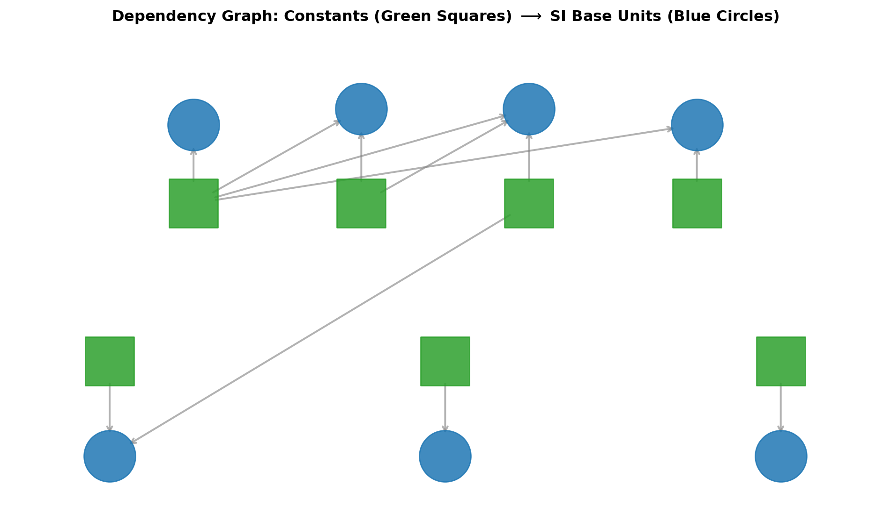

Code
import matplotlib.pyplot as plt
import matplotlib.patches as patches
fig, ax = plt.subplots(figsize=(10, 6))
# Coordinates for Constants (Inner circle / Top) and Units (Outer circle / Bottom)
constants = {
r'$\Delta\nu_{\mathrm{Cs}}$': (2, 4),
r'$c$': (4, 4),
r'$h$': (6, 4),
r'$e$': (8, 4),
r'$k$': (1, 2),
r'$N_{\mathrm{A}}$': (5, 2),
r'$K_{\mathrm{cd}}$': (9, 2)
}
units = {
'Second (s)': (2, 5),
'Meter (m)': (4, 5.2),
'Kilogram (kg)': (6, 5.2),
'Ampere (A)': (8, 5),
'Kelvin (K)': (1, 0.8),
'Mole (mol)': (5, 0.8),
'Candela (cd)': (9, 0.8)
}
# Draw Constants (Diamonds)
for label, (x, y) in constants.items():
ax.scatter(x, y, s=1500, marker='s', color='#2ca02c', alpha=0.85, zorder=4)
ax.text(x, y, label, ha='center', va='center', color='white', fontsize=11, fontweight='bold')
# Draw Units (Circles)
for label, (x, y) in units.items():
ax.scatter(x, y, s=1700, marker='o', color='#1f77b4', alpha=0.85, zorder=4)
ax.text(x, y, label, ha='center', va='center', color='white', fontsize=8.5, fontweight='bold')
# Directed connections (Constant -> Unit)
edges = [
(constants[r'$\Delta\nu_{\mathrm{Cs}}$'], units['Second (s)']),
(constants[r'$c$'], units['Meter (m)']),
(constants[r'$\Delta\nu_{\mathrm{Cs}}$'], units['Meter (m)']),
(constants[r'$h$'], units['Kilogram (kg)']),
(constants[r'$c$'], units['Kilogram (kg)']),
(constants[r'$\Delta\nu_{\mathrm{Cs}}$'], units['Kilogram (kg)']),
(constants[r'$e$'], units['Ampere (A)']),
(constants[r'$\Delta\nu_{\mathrm{Cs}}$'], units['Ampere (A)']),
(constants[r'$k$'], units['Kelvin (K)']),
(constants[r'$h$'], units['Kelvin (K)']),
(constants[r'$N_{\mathrm{A}}$'], units['Mole (mol)']),
(constants[r'$K_{\mathrm{cd}}$'], units['Candela (cd)'])
]
for (x1, y1), (x2, y2) in edges:
ax.annotate('', xy=(x2, y2), xytext=(x1, y1),
arrowprops=dict(arrowstyle="->", color='gray', lw=1.5, alpha=0.6, shrinkA=18, shrinkB=18))
ax.set_xlim(-0.2, 10.2)
ax.set_ylim(0, 6)
ax.axis('off')
ax.set_title("Dependency Graph: Constants (Green Squares) $\\longrightarrow$ SI Base Units (Blue Circles)",
fontsize=12, fontweight='bold', pad=20)
plt.tight_layout()
plt.show()